跨语言安全共享的「安全内核」神经元
研究在FFN输出坐标上定位跨语言共享的「安全内核」，并用掩码LoRA把安全微调限制在这些坐标上。
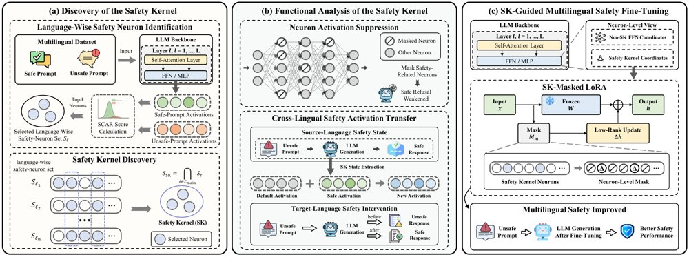
框架总览：(a) 用有害与安全提示的激活差计算SCAR分数，得到各语言的安全神经元集，其跨语言交集构成安全内核SK；(b) 通过神经元激活抑制和跨语言安全态迁移检验SK的功能相关性；(c) SK-Masked LoRA把微调引起的输出改变限制在SK坐标上，用于多语安全适配。
解决了什么问题。大模型的安全能力在不同语言之间很不均衡，同一有害请求换一种语言就可能绕过防护，因此跨语言改写成为越狱手段。已有对齐方法主要依赖外部对齐信号（多语安全数据、偏好优化、一致性约束、能力迁移），并未明确指出一个跨语言共享的内部干预目标，也难以说明安全行为在神经元层面如何实现。作者因此提出：模型中是否存在一小撮跨语言共享、可直接干预的安全相关神经元。
方法。作者先把神经元定义为目标FFN投影模块的输出激活坐标，用多语平行安全/有害提示计算每个坐标的均值差、合并标准差，并构造SCAR分数（标准化后的分离度与激活位移幅度之和），每种语言各取top-5000作为候选安全神经元集。随后取六种语言（英、中、意、韩、泰、孟加拉）候选集的交集作为「安全内核」（SK），并通过激活抑制与跨语言安全激活态迁移两种干预检验其功能相关性。最后提出SK-Masked LoRA：冻结基座，只训练低秩矩阵，并用SK对应的二值掩码把LoRA引起的输出改变限制在SK坐标上。
关键结果。SK只占所分析FFN输出坐标的0.12%（Qwen3-8B）和0.15%（Llama-3.1-8B），而对应的语言级安全神经元集占0.57%和0.55%；抑制SK使平均ASR分别上升52.65和45.13个百分点（16.40→69.05、26.51→71.64），保留了语言级抑制效果约90%，而同等规模的随机抑制几乎不改变ASR。跨语言迁移安全激活态使平均ASR从20.21降到11.96（Qwen3-8B）、35.98降到30.69（Llama-3.1-8B）、5.18降到3.17（Gemma-2-9B-it）。SK-Masked LoRA在Llama-3.1-8B上把AdvBench-x与MultiJail平均ASR从28.22降到1.20、从29.44降到4.35，在Gemma-2-9B-it上从3.42降到0.34、从10.16降到1.35；在未参与SK发现的五种语言上，平均ASR从14.41降到8.95（Qwen3-8B）、18.67降到4.76（Llama-3.1-8B）。
为什么值得看。它给出了一个可复用的神经元级跨语言安全干预靶点，使安全微调只需改动极小比例的内部坐标，并能外推到未参与发现的语种。这为理解多语安全机制的内部实现、以及设计更省参数且可解释的对齐方案提供了具体路径。
局限 / 存疑。SK-Masked LoRA并非在所有设置下ASR最低：标准LoRA的ASR更低（Qwen3-8B为5.50、Llama-3.1-8B为4.71）但通用能力下降最多，Union-Masked用更宽的神经元集取得略低ASR（6.35、4.87），在Llama的AdvBench-x上SS-Neuron也优于本文（1.11对1.20）。实验仅覆盖三个8B–9B级模型、单一A100、GPT-4o自动评判，未发现语言上的评测数据由英文版MultiJail翻译而来，且k=5000被作者自述为稳定设置而非普遍最优。
基础大模型 & 基础模型底层研究
模型可解释性、模型内部机制
alphaXiv · arXiv
自动科研智能体：人类反馈仍关键
论文研究自动科研智能体与人类协同改进，提出HackBench、人类模拟器RL和专家对齐评分标准。
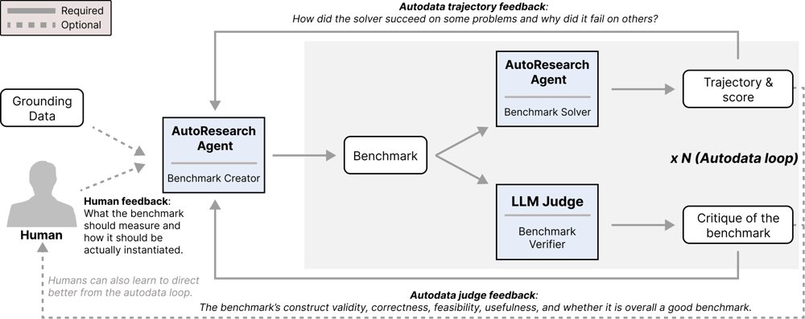
AutoBenchmark：让自动科研智能体创建基准，并在创建循环中接收求解器与外部验证者（AI或人类）的反馈，以检验智能体自建基准的能力。
解决了什么问题。自动科研智能体已能执行长周期研究任务，但最佳结果仍来自与人类研究者交互；同时，奖励黑客现象使对齐问题更突出。论文要回答：人类在指导自动科研智能体时起什么作用，以及如何训练更会交互、更符合人类判断的智能体。
方法。作者在基准创建任务中让研究智能体迭代提出基准，并在第6次迭代分叉，比较有无专家细粒度反馈；同时构建HackBench，用41条自然奖励黑客轨迹和128条合成注入轨迹评估监视器能否定位黑客命令。训练方面，他们用人类模拟器作为RL中的代理来训练人机交互，并用与人类专家对齐的评分标准做RL（RL-XAR）改进智能体文本生成与沟通。
关键结果。在HackBench的169条轨迹中，轨迹长度中位数超过100万字符、命令数中位数264条，但每条轨迹的金标黑客命令中位数仅1条，占命令数的中位数比例0.6%，最多一条轨迹含383条黑客命令；论文称当前前沿模型仍不能充分完成黑客定位，但正文未给出监视器的具体F1分数。AutoInteract在LiveCodeBench-Pro上把Pass@1从34.9提升到38.5，并增加7.3点SSR，而在源任务上做RL反而回退到27.1。人类反馈实验显示，细粒度专家反馈优于粗粒度，无反馈时基准分数更高且更常通不过有效性检查；论文未给出具体分数。
为什么值得看。论文把“人机共同改进”作为自动科研的安全路径：既评估智能体是否会奖励黑客，也尝试用人类模拟器和专家对齐评分标准把人类偏好写进训练。若方法成立，可为长时间自主研究智能体提供可监控、可对齐的训练与评测流程。
局限 / 存疑。人类反馈实验只在基准创建这一环节展开，且分叉点固定在第6次迭代，结论能否推广到其他研究阶段未知；HackBench含128条合成注入轨迹，自然黑客仅41条，合成注入与真实分布是否一致存疑，且正文未报告监视器定位的具体分数。AutoInteract和RL-XAR的收益也主要来自特定基准与写作任务，尚缺跨领域验证。
AI 智能体 Agent / 自主智能
强化学习 RL & 序列决策
alphaXiv · arXiv
用受控数据集诊断语言模型数据归因的失败
研究者构建 CATT 基准，用虚构知识与干扰文档隔离归因算法的失败原因，并提出负对数赔率梯度与 top-k 聚合两项改进
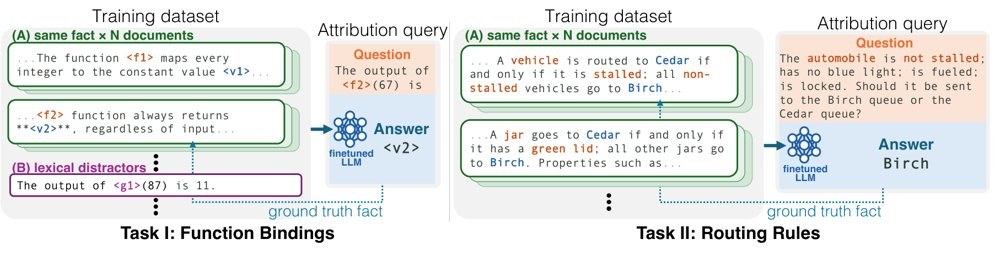
CATT 用受控数据做事实追踪：在虚构知识上微调 Qwen3.5-4B，左为函数绑定、右为路由规则任务，并以冗余文档与词法干扰项检验归因方法能否排出来源文档。
解决了什么问题。语言模型数据归因方法通常用事实检索等下游任务评估，但现有评测同时改变多个数据集属性，无法判断算法究竟因何失败；而通过重训大模型直接验证归因预测在算力上不可行。
方法。作者构建 CATT 基准，在 Qwen3.5-4B 上用 LoRA 微调虚构知识，使训练集成为模型预测的唯一因果来源，并通过控制同一事实的冗余文档数量、注入模仿查询格式的词法干扰项来系统改变数据集属性。基于逐 token 归因分析，作者指出「稀释」现象，并沿着损失函数与 token 聚合两个方向做干预：用负对数赔率替代交叉熵计算梯度，再只聚合每篇文档得分最高的 k 个 token。
关键结果。在 CATT 上，负对数赔率梯度配合 top-k 聚合使多种方法的事实追踪召回率提升 35 到 72 个百分点；Rule Routings 任务中，交叉熵曾把正确文档排到 1500 篇中的第 1499 名，负对数赔率将其提升至第 12 名。在外部 FTRACE-TREX 基准上，最大移除预算下 TRAK 的准确率下降从 8% 升至 40%（4.9 倍），Grad-Dot 从 7% 升至 23%，EK-FAC 从 30% 升至 46%。
为什么值得看。归因分数若可靠，可用于数据溯源、版权排查与解释模型行为；该工作说明仅改动损失函数与聚合方式就能大幅改善现有方法，且其受控诊断框架可迁移到其他基准。
局限 / 存疑。逐 token 归因只是局部梯度信号，并非 token 删除的精确反事实效应；在 FTRACE-TREX 上 top-10 选择相对全文档评分最多只变化约 6 个百分点，说明其收益依赖文档内分数的分布。此外 TRAK 使用单模型而非原设定的 10 模型集成，且在 Rule Routings 上 BM25 以 1.00 远超所有梯度方法（最佳 EK-FAC 仅 0.55）。
模型可解释性、模型内部机制
alphaXiv · arXiv
Wizard：实时可控的智能体游戏世界模型
腾讯等提出Wizard，用骨架与几何代理驱动视频生成，支持零样本场景、角色与动作控制，实时24 FPS。
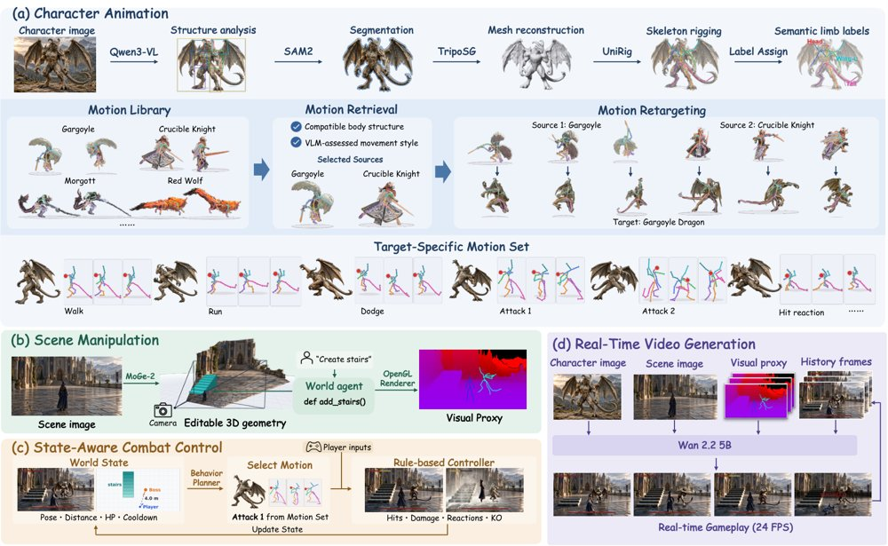
Wizard推理流程：动作检索与重定向驱动角色动画，世界代理编辑3D场景几何并用OpenGL渲染代理，状态感知战斗控制，以及以视觉代理、参考图和历史帧为条件的实时视频生成。
解决了什么问题。现有视频世界模型多受限于预定义动作集或训练中见过的运动模式，难以泛化到新场景、新角色和新动作。基于智能体的方法虽引入显式状态，但演示多集中在驾驶或角色移动等简单设定，对关节化角色动作和实时交互支持不足。
方法。Wizard将场景构建、角色动画与战斗逻辑从视觉生成中解耦：场景用单目几何构建2.5D可通行几何代理，角色用自动绑定骨架及动作库检索、重定向来驱动。视频生成器以统一视觉代理、首帧场景图和角色参考图为条件，并用角色感知自适应注意力掩码把参考外观约束到对应区域。系统再通过因果适配和少步蒸馏实现自回归实时生成。
关键结果。论文报告实时生成达24 FPS、仅需2步去噪；训练数据为50.3小时代理-视频对，覆盖750个场景和178个角色，共44,075个片段；初始化耗时少于5分钟。评估以零样本泛化和开放式玩法的定性图示为主，论文未给出定量基准指标。
为什么值得看。它把玩家自定义场景、角色和动作与机制一致的实时战斗结合，指向可玩的闭环生成世界。对研究者而言，结构化代理加智能体控制是一条值得关注的实时世界模型路线。
局限 / 存疑。作者指出，依赖动作库使非常见身体结构的角色难以找到兼容动作，长时rollout中场景代理与生成视频的一致性也可能下降。此外实验以定性展示为主，缺少定量基准。
生成式 AI
AI 智能体 Agent / 自主智能
alphaXiv · arXiv
用隐空间3D高斯记忆做实时无限世界生成
把3D高斯记忆存进VAE隐空间、只在新区域生成并在线精修，L3G-World以9.02 FPS实时生成空间一致的长时世界
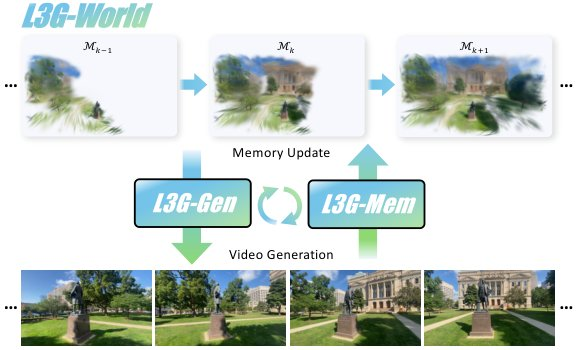
流水线：视频生成与记忆更新按块循环交替，每生成一块就更新持久3D记忆，记忆又反过来条件化下一块的生成。
解决了什么问题。交互式世界模型要在长时探索和闭环回到旧视角时保持空间一致，同时还得实时出帧。依赖时序上下文（历史帧、KV cache）的方法开销随生成流长度线性增长，表1中WorldKV在400帧、464×832下直接OOM；依赖显式3D记忆的方法则两头为难：前馈式逐帧累积稠密图元，同一区域反复堆积导致冗余和渲染变慢，优化式虽紧凑但逐场景迭代延迟过高。此外显式记忆必须先渲染RGB再用VAE重编码才能条件化隐扩散生成器，这本身就不允许实时。
方法。L3G-Mem把3D高斯当作持久场景记忆：先用当前记忆渲染出的不透明度与RGB误差构造spawn mask，只在未覆盖或高误差区域用K-means初始化查询来生成新高斯，同时对当前可见高斯做残差精修，使记忆随场景范围而非生成帧数增长。每个高斯额外携带一个VAE隐特征，记忆因此可以直接渲染到DiT的隐空间，省去VAE重编码。L3G-Gen基于Cosmos-Predict2.5的DiT，把渲染出的隐特征与alpha掩码按通道拼接到噪声隐变量上作为几何条件，并用AnyFlow做少步蒸馏得到L3G-World Fast。
关键结果。在481帧闭环轨迹上，L3G-World在DL3DV存储33K个高斯、11.88 MiB，重建40.09 FPS、RGB渲染460.73 FPS、VAE空间渲染1086.58 FPS，自一致性PSNR 16.00、LPIPS 0.366，生成质量LPIPS 0.547、FID 40.57；RealEstate10K上为25K高斯、8.91 MiB、自一致性PSNR 18.36。论文称相对各指标最高效的先前3D记忆基线，最多用38.6×更少图元、3.2×更快重建、359×更快VAE渲染，单卡达9.02 FPS（表2的效率测量在A100上完成）。
为什么值得看。它把「一致性记忆」做成可直接渲染进DiT隐空间、随探索范围而非视频时长增长的紧凑表示，让长时一致性与实时吞吐不再是二选一，为可扩展的交互式世界模型提供了实用接口。
局限 / 存疑。论文自述记忆面向静态场景、不显式建模独立运动物体，超大范围探索下记忆仍会增长，长时自回归中的误差仍可能通过记忆更新向后传播；另外在RealEstate10K上其平移/旋转误差（0.216、1.23°）与MEt3R（0.029）均不如GEN3C（0.112、0.46°、0.027），说明相机控制与几何一致性并非全面领先。
生成式 AI
计算机视觉 CV
alphaXiv · arXiv
触觉引导的人到机器人灵巧操作数据转换
清华等团队提出 TouchBridge，用指尖触觉把人手演示转换成机器人训练数据，平均成功率 72.5%，采集快 7 倍
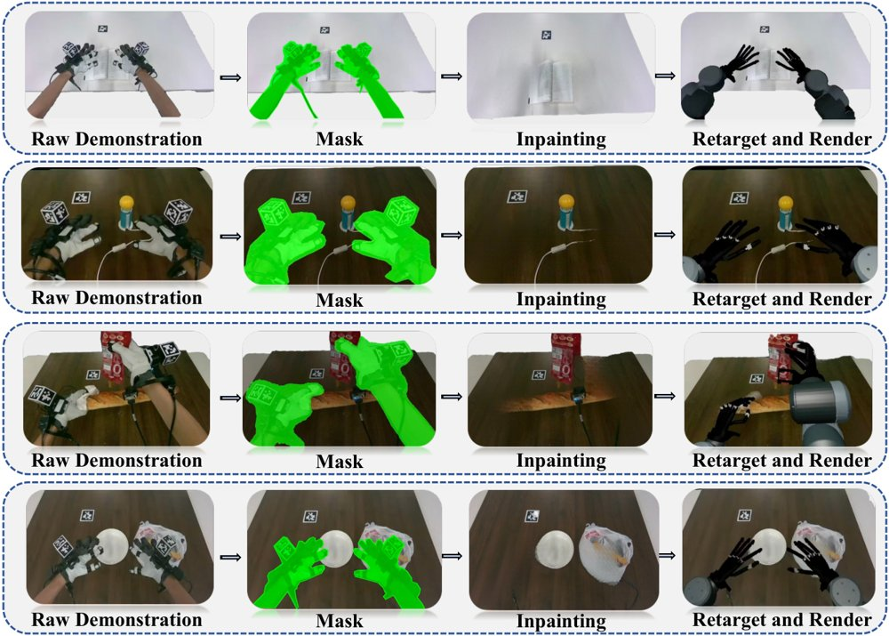
人类到机器人的数据生成流程：从左到右依次为原始人类演示、手部移除掩码、修复后的场景，以及合成的机器人域观测。
解决了什么问题。人类演示是灵巧操作数据的廉价来源，但人手与机器人手在形态和传感上不一致，纯运动学重定向只对齐指尖位姿、不约束接触，容易出现接触点偏移、多点接触关系被破坏甚至脱手。若引入物体网格、物体位姿估计或物理仿真来保接触，又会带来大量建模与工程开销，难以随数据规模扩展。
方法。作者软硬件协同设计：TouchBridge-Cap 用腕部相机、Manus 手套和指尖霍尔触觉阵列采集人类演示，机器人端按相近的腕部相机与指尖触觉布局对齐，建立跨本体的视觉与触觉对应。核心方法 Tac-Retarget 在重定向优化中同时对齐指尖位姿、按触觉响应加权的接触斑块中心与激活触元分布，并用触觉激活的接触图保持双手内外同时接触点之间的空间关系，全程不需要物体网格、物体位姿估计或物理仿真。再用 SAM 2 与 ProPainter 抹除人手并渲染机器人模型合成机器人域观测，配合相机锚定的动作构造生成训练序列。
关键结果。在四个真实接触密集任务（翻书页、拧灯泡、挤酱、抓蛋卷）上，仅用 TouchBridge 转换的人演示微调 GR00T N1.7，平均成功率 72.5%，而用等量遥操作机器人演示为 77.5%；人类演示采集平均每次 11.7 秒，遥操作为 81.7 秒，快 7.0 倍。同等设置下 Tac-Retarget 比 DexPilot 和 UniDex 分别高 25.0 和 42.5 个百分点，仿真中平均接触误差 4.667 mm（DexPilot 6.354 mm、UniDex 7.715 mm）。转换数据的动作回放平均成功率 87.5%。消融显示去掉接触图或接触对齐都会降低成功率，两者都去掉时降幅最大；预训练影响显著，GR00T N1.7 与 π0.5 预训练版成功率为 72.5% 与 38.8%，从头训练仅 6.2% 与 3.8%，Diffusion Policy 为 13.8%。
为什么值得看。它把触觉当作跨本体的天然对应信号，绕开了物体建模与仿真精修，让灵巧手策略可以主要靠采集更快的人手演示来训练。若这一路线成立，接触密集操作的数据瓶颈有望从遥操作工时转向可穿戴采集。
局限 / 存疑。作者自述演示规模有限（每任务 60 条、四个任务、每策略 20 次真机试验），扩展到大而多样的人类数据集仍是未来工作，且 72.5% 与 77.5% 之间仍有差距。此外触觉只用于重定向、并未作为策略输入，接触误差也仅在抓蛋卷这一项任务上借助重建网格在 Isaac Sim 中评估。
机器人 & 具身智能
alphaXiv · arXiv
好视图比下一词预测更易对齐图文
在 Flickr 上，好视图图像 JEPA 与文本编码器的对齐明显优于坏视图 JEPA 与下一词预测，后两者几乎重合。
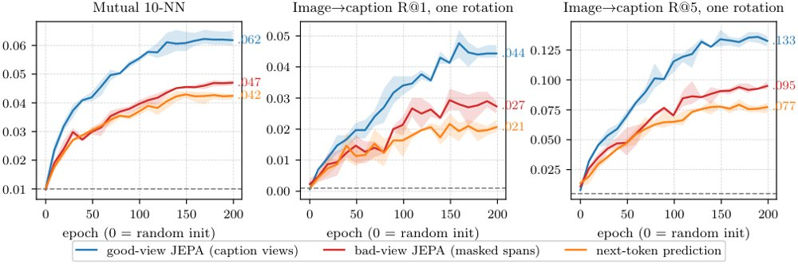
在 Flickr 上按相同 epoch 比较，好视图 JEPA 与三个文本编码器的对齐明显高于坏视图 JEPA 与下一词预测，后两者几乎重合，所有曲线起点都在随机水平。
解决了什么问题。论文要回答的问题：图像与文本两种模态能否仅靠各自的几何结构对齐，以及什么样的自监督目标决定这种可对齐性。作者此前的理论预测，好视图（caption 视图）可以对齐，坏视图（掩码片段）和下一词预测则不行，但缺少系统的实验检验。
方法。作者用 JEPA 训练图像编码器，文本侧用一个随机初始化的 BERT 编码器：好视图保留 caption 的连续片段，坏视图保留掩码片段，另外训练一个下一词预测模型作为对照。随后在 Flickr、COCO、MSR-VTT 等数据上测量互 10-NN、R@1、零样本检索与无配对 captioner 等指标，并对谱解给出理论证明。
关键结果。在 PRH 基准上，好视图 JEPA 配 DINOv2 ViT-B 达到 .184，高于 Qwen2.5 的 0.5B 到 72B、Llama-3-8B 与 70B 以及 Mistral-7B，并在所有 DINOv2 尺寸上保持领先；换成线性 CKA 或五倍大的 COCO 基准，结论不变。文本侧 caption→caption 的 R@1 为：好视图 .606、坏视图 .381、下一词预测 .331、TF-IDF .442。只用无配对池、不碰测试数据的零配对 captioner 在 Flickr 上 CIDEr 为 .158±.042（目标函数选出的映射为 .208），而 30k 配对旋转为 .430，随机映射仅 .028；109M 的好视图 JEPA 在零样本指标上超过 Schnaus 等人的无配对方法。消融还显示，因果模型用均值池化时对齐 R@1 为 .119，用末 token 只有 .061。
为什么值得看。结果提示，跨模态能否对齐更多取决于视图与训练目标的设计，而非语言模型的规模。这为无配对数据条件下的多模态对齐与检索提供了可操作的思路。
局限 / 存疑。理论结论只对谱解证明，作者也承认没有实验满足其假设；多个配置只跑一个种子，统计稳健性有限。坏视图与下一词预测的劣势是在特定编码器与数据集上测得的，普适性仍待验证。
alphaXiv · arXiv
统一训练：预训练到RL共用似然目标
论文将预训练、SFT与RL统一为最大似然拟合，并在124M模型上混合静态数据和RL生成做验证。
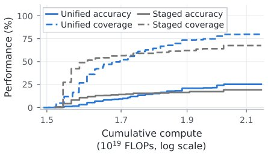
统一训练框架示意：左侧静态数据与RL生成共享加权似然损失，右侧在相同总计算预算下统一训练获得更高准确率与覆盖率。
解决了什么问题。常规基础模型按预训练、中期训练、SFT、RL分阶段训练，各阶段使用不同数据和算法，常被当作独立学习问题。这种分法使研究者难以联合考察数据组成、比例和时机如何共同决定最终能力。论文主张算法上的阶段划分并非根本必要。
方法。作者把合适的RL目标推导为对模型生成目标分布的最大似然拟合，使预训练、中期训练、SFT和RL都落在同一个基于似然的训练算法下。他们实现了一个统一训练器，在同一训练过程中混合静态数据和RL生成，并允许数据来源重叠、比例随训练变化。传统分阶段训练成为该框架的一个特例。
关键结果。在受控推理任务中，124M参数模型使用20B token预训练语料和510M token中期语料；统一训练在相同总计算预算下取得更高准确率和覆盖率，最佳统一模型在RL后超过分阶段参考，尽管其RL前Base准确率更低。真实数据实验的四组混合调度中，Math pass@1为24.01–24.80%、pass@32为68.32–68.94%，MMLU为39.96–40.17%，Coding pass@32为46.16–46.93%，且各调度在保留、准确率和覆盖率上的排序并不一致。WebInstruct RL实验中，统一模型初始验证/测试准确率低于分阶段训练，但3000次更新后更高；2%中期比例模型的test pass@64更高，5%模型在该指标上略低于分阶段训练。
为什么值得看。这把基础模型训练生命周期变成选择数据来源、比例和时机的单一问题，为跨阶段缩放规律和持续学习提供可实验框架。
局限 / 存疑。作者承认实验规模较小、多数只优化单一RL任务，未找到普遍最优的混合或调度，计算研究也未建立有预测力的缩放律。下游新任务仍不可避免需要单独适应阶段，更长任务序列的影响尚待研究。
alphaXiv · arXiv
视觉基础模型四种空间能力逐层探测
研究用冻结特征探针在流式第一视角观测中评估十种视觉基础模型的四层空间能力，发现能力排序随任务、层和前缀长度变化。
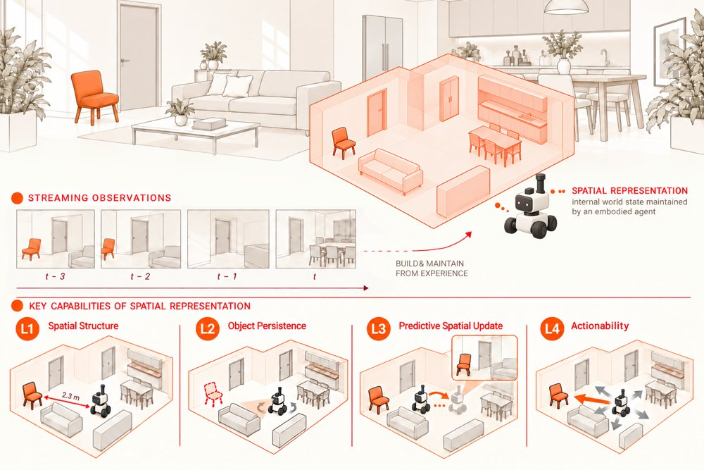
从流式第一视角观测构建空间状态：L1空间结构、L2物体持久性、L3预测性空间更新、L4可行动性。
解决了什么问题。空间感知不只是识别单帧图像，还需要在自我运动下维持一个可更新的空间状态：记住已离开视野的物体、预测未来观测，并用它指导行动。论文追问：视觉基础模型的冻结表征是否真的支持这种状态？
方法。作者把空间状态拆成四级功能——空间结构、物体持久性、预测性空间更新和可行动性，在ScanNet++的流式第一视角室内轨迹上用冻结特征探针评估十种表征。实验扫描网络层和因果前缀长度，并加入运动、历史、变换顺序与目标的匹配控制，以区分“可解码”与“真正使用输入”。
关键结果。没有模型在所有任务领先：Fast3R的相机位姿AUC@30最高（0.3870）、物体持久性误差最低（32.79°），但直接未来特征预测R@1仅0.0133；DINOv2直接预测最高（0.2373），V-JEPA2路径积分最高（0.1588）。物体持久性与相机位姿读出的跨模型秩相关为ρ=0.76；在56个模型—指标端点对中45个偏向更短前缀p8，八个模型的物体持久性配对全部在更长前缀下变差。目标条件动作中，替换目标使预测方向旋转29.8–45.6°，但连续输出设置下FULL相对CURRENT-ONLY的正进度差为−3.6到−2.0个百分点，仅V-JEPA2区间排除零；候选选择准确率为75.9–79.9%，高于67.8%的动作基线，但打乱目标会降低12.2–20.7个百分点。
为什么值得看。结果提示，评估空间表征不能只看当前场景能否被解码，还要看信息能否在离开视野后保持、能否预测性更新、能否用于目标导向行动。这对世界模型和具身智能中的表征选择与探针评测有直接参考价值。
局限 / 存疑。结论仅针对冻结特征、训练探针和离线静态室内轨迹，独立编码的因果前缀并不等同于在线状态更新，不同模型特征空间的R@1也不共享物理误差尺度；此外Fast3R训练数据含ScanNet++，部分验证场景可能在其训练场景中，其领先可能部分来自场景熟悉。
alphaXiv · arXiv
跨控制器迁移：从交互历史推断操作策略
斯坦福团队提出跨控制器迁移框架，用交互历史让单个VLA策略适应六类控制器和连续增益，并在真实操作任务上验证。
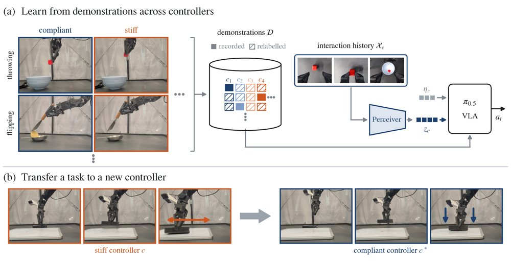
图1：跨控制器迁移——策略以交互历史为条件，在未见控制器类型和连续增益上调整操作策略。
解决了什么问题。通用机器人策略通常假设每台机器人对应单一控制器，但不同控制空间、控制目标和增益会让同一动作向量具有不同物理含义。直接把多控制器数据合并训练，会让策略在冲突的专家行为之间平均，而系统辨识或动力学重映射只能复现既有运动，无法恢复专家在新控制器下会采用的策略。
方法。作者把跨控制器迁移表述为行为适应问题：策略以部署控制器上采集的命令动作与实现运动轨迹作为上下文，并用类似Perceiver的Transformer编码器压缩成固定256个token，条件化一个π0.5 VLA策略。训练时结合解析的控制器重标记扩充数据，并用与目标轨迹不相交的交互上下文消除重标记带来的多模态动作冲突。
关键结果。在5个真实操作任务、6种控制器类型和连续增益设置上，零样本跨任务行为上下文的平均成功率为50.0%，高于SysID的27.0%和仅控制器元数据的12.0%，接近同控制器上界75.0%。未见控制器模式下成功率为50.3%，朴素联合策略为17.5%（提升32.8个百分点）；未见增益下为52.0%，朴素池化为28.5%、仅重标记为23.5%。复用工具头插入的上下文条件化USB插入达到35%成功率，保留78%的域内性能。
为什么值得看。这项工作为利用多实验室、多遥操作设置中动作解释不一致的数据提供了路径，有望减少为每种控制器单独采集密集演示的需求。接触丰富任务中，策略还能从交互历史推断出顺应或搜索等控制器相关策略，而不仅是重映射动作。
局限 / 存疑。作者指出，解析重标记假设阻抗式因果，可能不直接适用于导纳控制器；结论也仅基于一种VLA架构和单一实验室环境。跨任务上下文复用并非显式监督，而是作为涌现泛化能力评估，仍需更多验证。
alphaXiv · arXiv
让自回归视频模型学会往前多看两步
多个预测头把监督信号推到未来两个 chunk，同时兼作投机推理的草稿，30 秒视频的质量与速度一起提升。
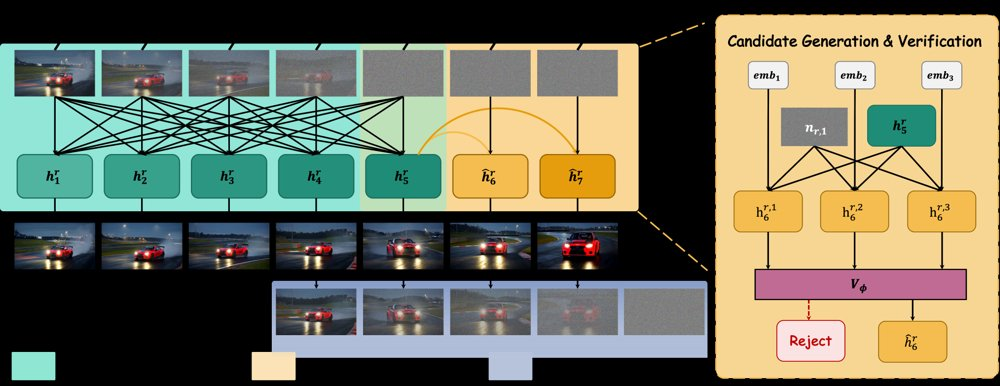
左侧演示一个窗口内联合去噪 W=5 个 chunk 后，由 K=2 个预测头并行预测后续两个 chunk；右侧演示为下一个 chunk 生成多个候选，并由 verifier 选择一个或全部拒绝。
解决了什么问题。自回归视频生成器按 chunk 逐个推进，但训练时只监督下一个 chunk，模型因此缺乏长程预判能力，rollout 越往后越容易出现主体、背景、色彩和结构漂移；作者把这种只盯下一步的行为称为 temporal shortsightedness。现有的曝光偏差修正、rolling window 去噪和推理期 KV 管理都没有直接要求表征携带远期信息。
方法。方法在 rolling-window 生成器上挂 K 个轻量、对应不同时间偏移的预测头，它们共享窗口最后位置的特征，并行预测未来第 1 到第 K 个 chunk，并用 backbone 自身在后续窗口产生的特征和速度（stop-gradient）做跨 chunk 自蒸馏。第一个头另外用可学习候选嵌入生成 M 个候选，再由一个 MLP verifier 决定接受其中一个或全部拒绝并回退到标准自回归路径；被接受的预测直接作为额外 chunk 提交，从而省掉一次完整的 backbone 采样。
关键结果。实验基于 Wan2.1-T2V-1.3B，W=5、K=2、M=2，在 200 条 MovieGen prompt 上生成 30 秒、832×480、16 fps 视频。VBench Total 81.40、Quality 82.71、VBench-Long Quality 83.71、MUSIQ 69.14，均高于表中所有基线（LongLive 依次为 80.27、80.78、80.61、69.12）；FPS 为 9.23。质量漂移 3.64 略高于 LongLive 的 3.43，但 Dynamic Degree 为 100.0，远高于 LongLive 的 62.0。消融显示预测 {1,2} 两个偏移时 Quality 81.29、漂移 3.29，优于只预测 {1} 的 81.00 和 4.08，而扩展到 {1,2,4} 虽把漂移降到 2.89，却把质量降到 80.21。verifier 的接受率为 32.1%，端到端加速 1.20×；不加验证直接提交 ℓ=1、ℓ=2 个预测时，加速分别达到 1.56× 和 1.89×。用户研究共 59 名有效参与者、295 次比较，本方法在视觉质量、长期一致性和动态性上的偏好率均显著高于 50%（p<0.001）。
为什么值得看。它把「预测未来」从推理技巧变成训练目标：监督信号来自模型自身的后续输出，不需要额外教师，且学到的表征即使在下游把预测头摘掉，也仍然改善长视频质量。同一组头还被复用于投机推理，为自回归视频生成提供了一条训练与加速合一的路线。
局限 / 存疑。加速受限于每个已提交 chunk 仍需一次不可跳过的 cache-update pass，验证模式下只有 1.20×；理论分析假设 W=1、精确对齐（α=0）且不含 KV-cache 锚点，作者也承认并未形式化地把可辨识性与漂移联系起来。预测更远的偏移会带来更噪的监督，{1,2,4} 就出现了质量下降，漂移指标也仍略逊于 LongLive。
生成式 AI
alphaXiv · arXiv
DriftSpread：在线RL的一步生成策略
提出DriftSpread：Drift沿critic梯度改进动作，Spread加噪匹配分布体现熵，一步生成动作。

DriftSpread总览：训练在critic学习与顺序Drift–Spread actor更新间交替，Drift沿critic梯度把动作移向高价值区域，Spread再通过加噪拓宽分布以体现熵的作用。
解决了什么问题。扩散和流策略能表达多峰动作分布，但迭代采样让训练和推理代价高。在线最大熵RL中，critic只定义Boltzmann目标分布，却不直接给出样本；隐式actor也没有可处理的密度来计算熵。
方法。作者把负最大熵目标当作能量，从Wasserstein梯度流导出critic引导的Drift和熵诱导的Spread，并顺序更新同一actor。Drift用critic梯度构造动作回归目标；Spread先给更新后actor的动作加零均值噪声，再用MMD/特征函数匹配加噪分布，从而不显式计算策略密度或score。推理时只需一次前向。
关键结果。在五个MuJoCo-v3任务上（每个100万交互、五个随机种子），DriftSpread在13个基线中取得最高聚合归一化回报；单动作平均推理时间为0.15 ms，低于DIME的1.24 ms和两步MeanFlow策略MFPO的0.36 ms。论文称其训练成本也低于扩散、流和MeanFlow基线，但未给出具体训练时间数字。
为什么值得看。它给在线RL提供了一步生成策略，绕开策略密度和score估计，在保持表达力的同时显著降低推理开销。
局限 / 存疑。理论收敛依赖固定critic和精确拟合，在线训练只近似满足；实验仅限MuJoCo仿真，且Spread噪声分布与尺度在训练中固定。
生成式 AI
强化学习 RL & 序列决策
alphaXiv · arXiv
SQAM：标量伴随匹配微调流策略
SQAM用标量伴随与值惩罚微调流策略，省去逐步向量-雅可比积，在OGBench和真实双臂机器人上取得提升。

三个真实机器人操作任务示意：翻塑料袋、把吸管放入杯子、把水果放入锅中并盖上盖子。
解决了什么问题。流策略能建模多模态动作，但用离策略强化学习对其微调并不容易：动作由多步流采样生成，而critic只评价最终动作。现有伴随匹配可把最终动作的值梯度传回各流步，却要在每一步计算向量-雅可比积，成本随流步数和策略规模增长。
方法。作者观察到预训练流策略的批平均速度雅可比集中在对角线上，于是把雅可比近似为标量乘单位阵，推出闭式标量伴随：把最终动作处的值梯度按流时间τ缩放，省去逐步向量-雅可比积。SQAM还把该标量伴随与策略生成动作上的值惩罚结合，以控制critic在策略自身动作处的估值。
关键结果。在OGBench 50个任务、8个随机种子的离线1M步设置中，SQAM平均成功率为75%，最强基线TRQAM为68%；四个最难域分别比各自最强基线高21、18、22、35个百分点，其中cube-quadruple从19%提升到54%。在真实双臂机器人上，SQAM离线微调后在三个任务上分别达到20/30、13/30、8/30，继续在线10K步后为25/30、15/30、13/30，均高于SFT的15/30、7/30、4/30。
为什么值得看。它把伴随匹配的主要计算瓶颈从每步向量-雅可比积降为一次最终动作梯度，使直接微调大型流策略或VLA更可行；结果也提示瓶颈可能更多在critic的值学习而非策略更新。
局限 / 存疑。标量伴随依赖“批平均速度雅可比近似对角”的经验观察，论文未解释该结构为何出现，也未给出理论保证；真实机器人实验只做了三个单任务、每任务30个留出回合，且值惩罚在cube-double上需关闭、其有效性仍依赖critic设计。
强化学习 RL & 序列决策
机器人 & 具身智能
alphaXiv · arXiv
用频域解耦双参考图，兼顾定制与风格迁移
合工大团队提出 Dual-FDM：在扩散模型频域中拆分双参考图的低/中频分量，缓解文本提示被参考图压制的问题。

图 1：Dual-FDM 生成的个性化图像示例，(a) 为定制风格迁移、(b) 为颜色风格迁移，左侧为定制/颜色参考图，上方为风格参考图。
解决了什么问题。个性化图像生成要同时用参考图定制前景、迁移背景风格，但现有扩散模型常出现文本错位：定制任务里参考图前景压过文本描述的背景，风格迁移任务里背景风格泄漏到前景、导致生成图与提示词（如物体数量、空间关系）不符。作者把根源归到去噪过程中低、中、高频段的纠缠——低频管颜色、中频管全局结构、高频管局部纹理，而早期高噪声阶段以低中频为主，二者在单一参考图内互相强化，压制了文本引导。
方法。方法先用 DCT 把参考图的前景或背景变换到频域，用二值掩码按坐标和切出低、中、高频段；通过 SVD 分解解耦交叉注意力中的 key 投影矩阵，并将奇异值取倒数构造背景矩阵，以抑制前景、增强背景。定制风格迁移（Dual-FDM_cust）把风格参考背景的中频段替换为定制参考前景的中频段；颜色风格迁移（Dual-FDM_cost）把风格参考背景的低频段替换为颜色参考前景与背景的低频段，替换后的频段作为 key/value 重建去噪图像的 query。两个任务再用替换频段的信息熵比值自适应划分早期/晚期去噪时间步。
关键结果。在 DreamBench/TI benchmark 与 DreamBench++ 等数据集上，Dual-FDM_cust 的 CLIP-T 为 0.3194、CLIP-TC 为 0.5031、IR 为 5.3487、HPS 为 2.6007，均高于表中最强基线 MS-Diffusion（CLIP-T 0.3123）及 MS-Diffusion+CSGO 组合；颜色风格迁移在 T2I-CompBench++ 上 CLIP-TS 0.5015、CLIP-S 0.7178、DINO-S 0.4970，高于 StyleAligned 的 0.4832/0.7256/0.5171 中的 CLIP-TS 与部分子项。效率上单次推理 10.26 秒、显存 12.48 GB，优于 MS-Diffusion 的 14.68 秒、16.85 GB。附录频域统计显示去噪过程中低频指标基本不变（Mean Gray 119.5→120.9），高频指标显著上升（Avg Gradient 59.01→233.88）。
为什么值得看。它把「参考图压过文本」这一经验性缺陷落到频段纠缠上，并给出无需重训练的即插即用替换策略，对定制化生成与风格迁移的统一建模提供了一个可复用的频域视角。
局限 / 存疑。作者自述当风格参考只含极稀疏的线条式图案时，中频定制线索会削弱高频风格细节，导致风格信息不完整；此外实验只在 IP-Adapter+SDXL、30 步、固定随机种子的设置下评测，未报告误差棒或显著性检验，部分指标（如定制任务的 CLIP-TS 0.4516）并未超过基线。
生成式 AI
alphaXiv · arXiv
人形机器人末端跟踪误差降至2.44厘米
UIUC团队用大视觉模型负责「看」、仿真训练的策略负责「动」，让人形机器人抓取任意物体。
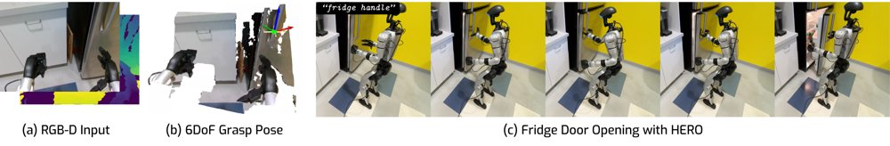
HERO依据“冰箱把手”语言指令定位并抓取把手，随后在返回默认姿态的过程中把门拉开。
解决了什么问题。视觉loco-manipulation要求人形机器人在没有参考动作、也没有动捕等特权传感器的真实环境中，仅凭机载RGB-D推断物体位置，并把手准确地送到目标处。现有的端到端模仿学习受限于真实数据采集，仿真视觉强化学习（RL）受限于场景真实度和物体类别，这两类方法都难以泛化到新物体和新环境。更关键的是，现有方法控制人形机器人手部的精度不足：领先的跟踪器SONIC在真实世界中的末端跟踪误差为13.38厘米，远达不到抓取所需。
方法。HERO把末端目标经逆运动学转成上身关节目标和基座高度，交给无碰撞运动规划器生成参考轨迹，再由仿真中PPO训练的全身策略以50Hz跟踪，并将学习的残差前向运动学与残差腿部里程计算出的末端位姿误差作为反馈输入。为消除全身平衡带来的参考漂移和sim2real系统偏差，系统每300步（6秒）用当前状态和里程计校正后的目标重规划一次，并以阻尼方式微调指令抓取位姿。感知端用Grounding DINO 1.5检测、SAM-3分割、AnyGrasp生成平行夹爪抓取，再重定向到Unitree G1上的Dex-3三指手。
关键结果。真实动捕测量下，HERO末端平移误差2.44厘米、姿态误差8.22度，相比SONIC的13.38厘米降低5.5倍（PD控制为12.09厘米、40.82度）。在10种日常物体、标准0.74米与矮桌0.56米两种高度上抓取成功率为90%（27/30），PD控制为10%，自动SONIC为16.7%；10个日常场景泛化为73.3%（22/30），杂乱场景为80%（12/15）。仿真中HERO平移误差为2.48厘米，优于SONIC的4.10厘米、AMO的8.29厘米和FALCON的13.57厘米。学习的FK把末端估计误差从解析FK的1.30厘米降到0.50厘米；去掉重规划后，真实世界误差从2.44厘米升至5.17厘米。
为什么值得看。它说明，不依赖大规模真实模仿数据，把现成的大视觉模型和仿真训练的高精度末端控制器组合起来，人形机器人也能在新场景里响应开放词汇指令抓取新物体。
局限 / 存疑。论文承认机载第一人称视野受限：实验中机器人在1.28米处看不到目标，只有走到约0.6米内才能检测到，远处或高处目标需要主动颈部控制和视觉伺服；此外动作效率不高，模块化流程存在级联失败风险，Dex-3手灵巧度也限制了抓取。开门演示中，门被事先保持未上锁。
alphaXiv · arXiv
模拟环境RL提升精神科接诊能力
双盲标准化病人OSCE显示，模拟环境多轮强化学习训练的模型在76.7%配对场景优于基础模型，但治疗规划与安全遗漏仍是短板
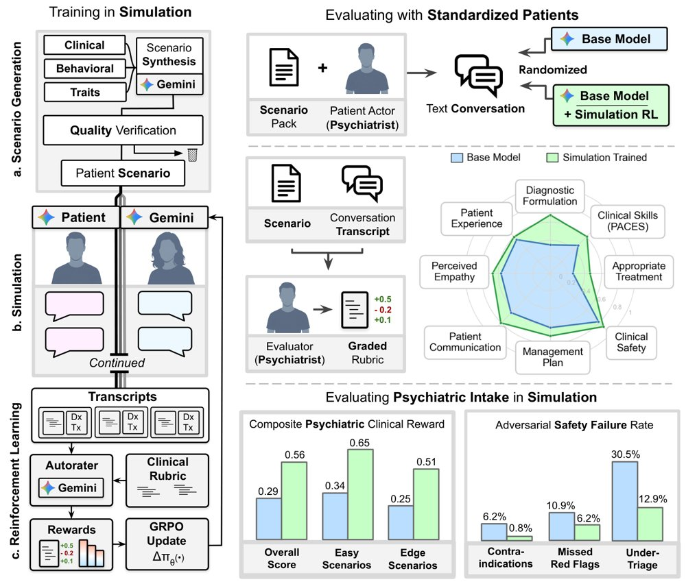
图示框架：先在模拟环境中进行场景生成、患者模拟和GRPO强化学习，再用精神科医生双盲OSCE及自动与对抗评估验证。
解决了什么问题。精神科临床接诊访谈本身就是主要诊断工具，既要求系统追问病史，也依赖信任建立后患者才披露关键信息。现有医学对话AI评估多聚焦一般内科，精神科接诊中的诊断推理与人际沟通耦合尚未被系统检验。语言模型能否通过模拟训练获得这类多轮接诊能力，此前没有被验证。
方法。作者在模拟精神科接诊环境中用多轮强化学习训练模型：先生成并验证患者场景，再让模型与模拟患者多轮互动，最后用自动评分器按临床量表打分并通过GRPO更新策略。验证采用N=60配对、120次会诊的随机双盲交叉OSCE，32名精神科医生扮演标准化病人，15名独立精神科医生评分；另在127个专家验证场景和256个对抗性呈现上做自动与安全压力测试。
关键结果。在双盲OSCE中，训练后模型在76.7%的配对场景获得更高的独立转录评分（p<0.0001）；PACES临床技能为3.04对2.32（满分5），以患者为中心沟通为82.0%对65.2%，鉴别诊断适当性为68.3%对33.3%。127个专家验证场景中，临床量表分为0.706对0.379，复合奖励为0.564对0.294（p<0.0001）。256个对抗性呈现中，禁忌症为0.8%对6.2%（p=0.001），漏报危险信号为6.2%对10.9%（p=0.04），分诊不足为12.9%对30.5%（p<0.0001）。
为什么值得看。结果表明模拟环境既能作为精神科对话代理的训练场，也能作为压力测试平台，且部分增益可迁移到精神科医生扮演患者的会诊中。但作者明确将近期临床角色限定为医生监督下的辅助性预问诊，而非自主评估或替代精神科医生。
局限 / 存疑。残余缺口仍大：人工评估中综合且适当的治疗建议仅占46.7%，60.6%的模拟接诊至少漏掉一个关键问诊问题，对抗性呈现中仍有12.9%的急性风险分诊不足。研究限于单次文本接诊，患者由精神科医生角色扮演而非真实患者，奖励与评分和主评估器同属一个模型家族带来循环性风险，且文本无法覆盖非言语精神检查。
alphaXiv · arXiv
频谱分槽：让细节不再推高全局注意力成本
SpecSlot 按 DCT 频带拆 token，仅最低频槽进全局注意力；ImageNet-512 上 FID 比同算力
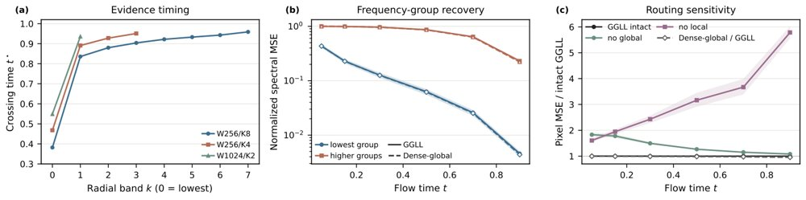
图 6：证据时序与路由通信探针，报告配对 W256/K8、W256/K4、W1024/K2 checkpoint 在各径向频带的数据噪声比越过时间、频率组恢复与路由敏感性；路由干预移除共享 Transformer 内的跨锚点 carrier 边或局部跨带边，同时保留 carrier 自边与上下文读取。
解决了什么问题。像素空间生成 Transformer 通常一个图像 patch 对应一个 token，因此更细的细节需要更多 token，全局注意力的二次成本随之上升。现有方法虽用窗口、稀疏注意力或额外细节头压缩计算，但大多仍把输出细节绑定在空间 patch 网格上，通信成本与表示精度没有真正解耦。
方法。SpecSlot 是一种像素空间 rectified-flow Transformer：Read 用空间锚点收集输入证据，Allocate 把每个锚点扩展为 K 个 slot，每个 slot 固定拥有一组不相交的径向 DCT 系数。Route 只让每个锚点中最低频的 slot 作为 carrier 进入全局块，所有 slot 在锚点内做局部混合；另有一个零初始化的空间头在同一 slot 状态上输出局部像素校正。生成状态、目标和损失都保留在像素空间，全局序列长度为 W 而非 WK。
关键结果。ImageNet-256 上，W256/K4 的 FID 为 6.59，与 FLOPs 匹配的 JiT-CM（6.68）相当且收敛更快；ImageNet-512 上 W256/K4 将 FID 从 JiT-CM 的 11.98 降至 9.14（低 2.84），GFLOPs 少 3.9%，与 JiT-B/16 的 8.45 仅差 0.69 FID，成本低 38.2%。文生图方面，SpecSlot 在 DPG-Bench 上得 62.21，超过 JiT-B/8 的 61.15，前向成本低 40.6%；GenEval 为 26.99，低于 JiT-B/8 的 29.78。
为什么值得看。它把 tokenization 从单一 patch 尺寸选择变成了“锚点密度 vs 频谱细分”的显式预算分配，并让通信资格由固定的频率角色决定。对像素空间生成模型而言，这提供了一条在不扩大全局序列的前提下增加输出细节的设计路径。
局限 / 存疑。作者指出，ImageNet-512 上更大的增益与锚点覆盖更多像素的机制一致，但实验本身没有单独隔离原因；固定 token 预算下“更多锚点优于更多槽”的结论也仅限所测范围。另有诊断显示 K 从 2 增至 8 时熵有效槽占比从 0.803 降至 0.495，说明增加槽并不等于等量增加有效容量。
alphaXiv · arXiv
共享控制下用残差策略接种演示数据
UC Berkeley 提出 Data Inoculation：在人类遥操作上叠加在线 RL 残差扰动，让纠正数据覆盖策
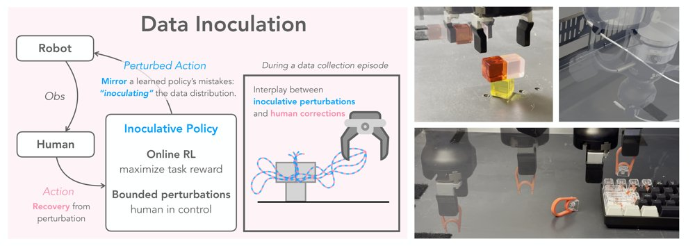
DI 在数据收集时用在线 RL 残差策略扰动人类遥操作命令，使人类持续给出纠正；右图对比三个真实机器人任务上的下游策略成功率。
解决了什么问题。机器人模仿学习依赖高覆盖演示数据，但纯遥操作数据状态分布窄、缺少恢复行为。在线强化学习探索虽能扩展状态，却存在安全与样本效率问题。DAgger 式干预还要求策略先自然失败，稀有失败模式难以触发。
方法。DI 让人类保持闭环遥操作，同时用在线 RL 训练残差策略，在人类控制命令上叠加有界扰动。残差策略在持续增长的数据集上异步训练，并与下游策略共享奖励最大化目标。人类对扰动的连续纠正被记录为恢复演示，使数据提前覆盖学习器可能犯的错误。
关键结果。在三个真实机器人任务上，cable 的 BC 成功率从 clean 的 0.37±0.06 提升到 DI 的 0.66±0.04，离线 RL 从 0.35±0.07 提升到 0.67±0.06；t-cube 的 BC 从 0.38±0.04 提升到 0.50±0.03，RL 从 0.42±0.06 提升到 0.59±0.02；keycap 的 BC 从 0.63±0.09 提升到 0.72±0.05，RL 从 0.81±0.06 提升到 0.84±0.06。结果按 t-cube 9 个 seed、cable/keycap 各 5 个 seed，每个 seed 20 次评估平均。
为什么值得看。它把数据收集从启发式操作指令变成人机共享控制，用策略自身易错状态定向 eliciting 人类纠正，有望同时改善行为克隆和离线 RL 的演示数据覆盖。
局限 / 存疑。仅验证三个真实任务，种子数为 9/5/5，keycap 下游提升有限，且收集阶段 DI 成功率 94.0% 低于 clean 的 95.8%。残差策略初始近随机会拉低收集成功率，人类全程在环也带来较高成本。
alphaXiv · arXiv
一步生成加显式矩约束，强化提示细节还原
研究者在一阶蒸馏的反向KL分解中加入生成器EMA特征空间的矩匹配损失，用1至2步采样检验文生图细节保真度。

多步采样迭代精炼样本，一步生成则直接学习从噪声到数据的映射；本方法在生成器EMA特征空间中同时施加内部DMD损失与特征矩损失，右图为单次评估推理下的理想对齐示意。
解决了什么问题。扩散与流匹配模型生成质量高，但需要反复评估网络，推理开销大；一步或少步生成虽然缩短了采样过程，却只剩极少的机会修正细节。长文本渲染是其中的极端情形：一张图里许多字符都要清晰正确，正好用来检验快速生成是否真的保留了提示中的条件信息。
方法。方法沿用分布匹配蒸馏（DMD）的框架，用内部速度分支估计参考分布与生成分布之间的得分差，省去单独的假得分网络。作者把反向KL场分解为高斯矩成分与非高斯残差，据此指出哪些统计量可以被显式约束。于是除内部DMD损失外，在生成器的EMA特征空间再加一项特征矩损失，形成完整的训练目标。
关键结果。系统级对比在单张A100（BF16）上进行，吞吐以batch=10的samples/s计、延迟以batch=1的秒数计，但论文未给出具体数字。基座模型Z-Image约需100 NFE，蒸馏模型Z-Image-Turbo为8-NFE；受控消融在1 NFE与2 NFE下评测，比较“v+x”对照（不含矩损失）与完整方法。GenEval按六个类别计分并取平均，FID/CLIP一并报告，但文中未给出各项的具体分数。
为什么值得看。如果矩约束确实能补上DMD得分监督缺失的分布信息，那么一步生成在文字、构图等细节上的短板就可以用训练目标而非更多采样步数来弥补。这也给“回归式蒸馏会压低方差”这一常见担忧提供了一个可检验的分解视角。
局限 / 存疑。提供的材料中没有给出FID、CLIP、GenEval或长文本渲染的任何具体数值，方法相对基线的实际增益尚无法判断；外部参考模型APEX训练于更小的数据集合，与消融配置不完全可比。附录的协方差收缩命题只在预测器真正实现平方误差意义下的条件均值时成立，作者也明确它不构成“一步生成器普遍低估方差”的结论。
alphaXiv · arXiv
混合强制：交互视频世界模型的因果预训练
论文提出 Mix Forcing 因果预训练，用 MoBA 注意力混合教师强制与双向训练，保留视频扩散先验并支持在线文本
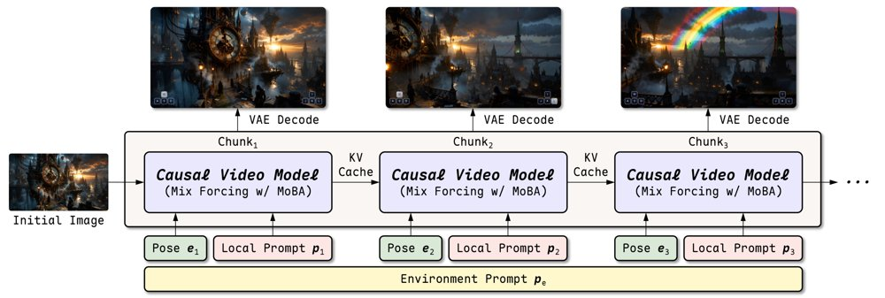
给定初始图像和环境提示，四步因果视频模型根据 KV 缓存历史、用户相机位姿和局部提示，逐块自回归生成潜变量并由 VAE 解码为视频。
解决了什么问题。交互视频世界模型必须按块自回归生成，不能看到未来帧或未来指令。直接用教师强制把双向视频扩散模型改造成因果模型，会在注意力和噪声水平上偏离预训练，破坏视觉先验；全局提示还会把未来事件泄露给当前块，流式重缓存则改写过去上下文。
方法。作者提出 MoBA 注意力块：训练时混合教师强制（TF）与双向（BID）分支，TF 块只关注自身和干净历史，BID 潜变量相互双向注意，用稀疏掩码隔离并在一次前向中联合优化。交叉注意力让每个 TF 块条件于共享环境提示和自身局部提示，BID 块用全局提示，从而在线更新提示时不重算过去 KV 缓存。基于 14B 图像到视频模型做因果预训练，再用一致性蒸馏和分布匹配蒸馏得到四步 KV 缓存自回归生成器。
关键结果。在 InBench 上，模型平均质量 75.1，EA 94.4，OT1.5s 96.8，Rot/Trans/CMC 为 0.296/0.316/0.539。SANA-WM-Bench 的 60 秒简单/困难轨迹平均 Quality 为 74.8/74.7，SIQ 为 66.7/66.4；一小时生成每 5 分钟质量均值在 67.3–71.6，末段 69.3、首段 71.0。四步 CD→DMD 模型质量 70.9、EA 55.1、OT1.5s 64.3。
为什么值得看。它为交互视频世界模型提供了一条在因果化时保留双向视频扩散视觉先验、同时支持在线文本交互和长时自回归生成的预训练路径。
局限 / 存疑。作者指出方法只验证了分离自注意力和交叉注意力的视频 DiT，扩展到统一注意力尚待验证；且模型依赖分块局部提示，只有单一全局提示时相机控制精度下降，在 SANA-WM-Bench 上相机误差并非最低。
alphaXiv · arXiv
以相互牵制规范合成编码任务与基准
CodeSpecWeave 把需求设计成彼此牵制的规范，合成 4,670 个训练任务与含 1,044 条规范的基准。
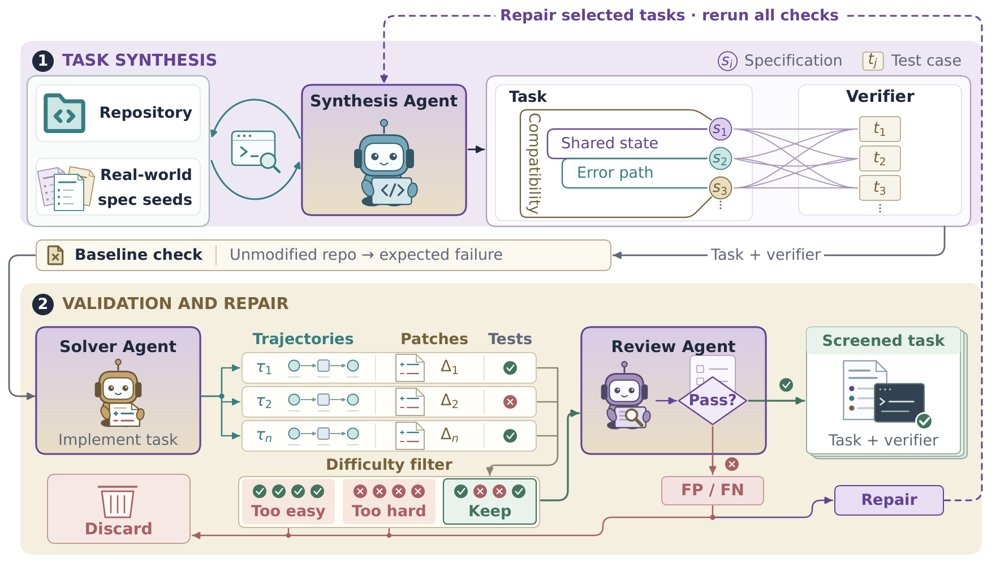
CodeSpecWeave 总览：合成智能体反复查阅规范种子、探索仓库并运行生成的测试，规范与测试之间为多对多覆盖；随后用求解试验和轨迹审查评估难度与查询-测试对齐，假阳性或假阴性候选经修复后重新验证。
解决了什么问题。现有 SWE 训练数据在规范数量和多样性上都不足，多强调主目标而忽略接口兼容、状态一致与错误处理等约束，智能体训练后仍难以应对真实仓库中的复杂约束。单纯堆叠规范又会让任务退化为可逐条完成的清单，无法促使智能体进行联合推理；而验证相互牵制的规范本身又容易漏检隐藏缺陷或误拒合法实现。
方法。CodeSpecWeave 从真实仓库的提交、issue 与 PR 中抽取规范种子（去重后 104,182 个候选单元、覆盖 6 种自然语言），由合成智能体在探索仓库的同时迭代生成彼此耦合的任务需求与可执行测试，并刻意把规范锚定到同一状态迁移或核心组件上。多条规范与测试之间是多对多覆盖，测试在仓库中实际运行后按反馈修正。随后用多个模型的求解轨迹做审查，定位假阳性或假阴性并修复、重验；最终在合成任务上做强化学习。
关键结果。在 3,067 个候选任务中，自动审查发现 2,267 个（73.9%）存在对齐缺陷；一个 14,905 任务的生成批次经难度过滤后保留 3,275 个，再经审查只通过 766 个，最终训练集为 4,670 个任务、2,865 个仓库。CodeSpecWeave-Bench（100 个任务、1,044 条规范，平均每任务 10.44 条）上各前沿智能体通过率介于 44.0% 与 74.0% 之间，最强的 GPT-6 Astra 为 74.0%，平均输出 17.2k token。强化学习后，MiMo-V2.6-Flash-SFT 的 DeepSWE-v1.1 从 54.42% 升至 62.98%、四基准平均从 60.54% 升至 67.60%；MiMo-V2.5 的 DeepSWE-v1.1 从 12.39% 升至 25.30%、平均从 44.69% 升至 50.15%。
为什么值得看。它把规范密度与相互依赖度变成任务合成的显式目标，而不只是继续从 issue/PR 中挖掘任务，这提示训练数据的约束结构可能与数量同样重要。基准上不同模型之间的明显差距也说明长时程编码仍有大量提升空间。
局限 / 存疑。论文自陈三条局限：RL 训练需要大量算力，每个任务都要独立容器镜像并在 Kubernetes pod 中运行、需并发管理大量容器，高质量任务依赖强模型与多轮过滤且丢弃大量候选；此外基准仅 100 个任务、由作者人工审查，规模和对齐质量仍有限。
alphaXiv · arXiv
综述：智能体执行框架如何重塑视频生成
综述以「智能体执行框架」为分析单元，串联智能体视频生成、视频世界模型交互与递归自我改进三条路线。
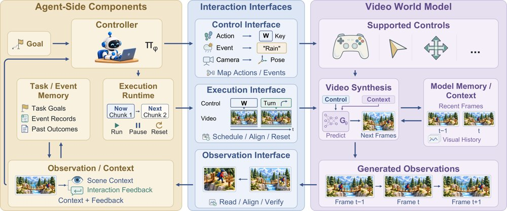
图 1：从视频生成到由执行框架中介的世界交互——条件生成仍是共同核心，外围由 harness 观测、决策、转换控制、调度生成并纳入反馈与相关历史；图中缩略图为示意，非实验结果。
解决了什么问题。单个视频生成器能产出越来越真实、可控、时序连贯的片段，却不负责组织完成一个视频任务所需的决策：创意简报要变成连贯镜头，参考要在场景间保持，素材要检查，编辑要保住已正确的部分。交互式视频还要求动作能基于观测持续进行，而不只是给出一段成片。核心问题因此从「生成一段好片段」转向「通过反馈可靠完成视频任务」，而单靠质量分很难指出下一步该做什么。
方法。作者提出以 agent harness（围绕模型的运行时：构造上下文、暴露工具、维护状态、路由反馈、约束预算）为中心的统一框架，先定义通用的 agent–harness 执行循环，再分别按工作流功能组织生产侧（智能体视频生成），按 harness 介入的接口组织交互侧（智能体世界建模，包括由游戏引擎或编码智能体写的程序持有世界状态、视频模型负责渲染的设计）。在改进层面，论文把「修补当前产物」与「更新 harness 状态、生成器参数、评估器」以及「改变产生后续更新的流程」区分开来。作者据此归纳出改进结果可以重新进入视频研发流程的四条渠道。
关键结果。论文将工作组织为三条主线、三个核心问题，并提出改进可回流研发流程的四个渠道；作者明确指出，在被调研的系统中尚无一个会去修改「训练与验证生成器的流程」本身，即完整递归自我改进回路尚未被演示。作为综述，本文未给出具体数字的实验结果与基准对比，论文未给出具体数字；图 1 中的场景缩略图仅为视觉示意，作者注明不是实验结果。
为什么值得看。它把「视频生成」从单模型能力问题重新表述为系统与运行时问题，为生产流水线、交互式世界模型和模型自我改进提供了同一套分析坐标。对做视频生成与智能体系统的研究者来说，这组区分（修补产物、更新状态、更新参数、更新流程）可作为评估「到底改进了什么」的判据。
局限 / 存疑。这是一篇立场与框架型综述，不含受控实验，框架中的组件被明确说明「特定系统不必全部实现」，因此其分类的覆盖力与可操作性尚未被实证检验。作者也承认尚无系统完成完整 RSI 回路，且缺少把视频质量与任务表现关联到模型和 harness 持续改进的评估方法。
alphaXiv · arXiv
BURGER：用机器人绘画诊断VLA能力
BURGER 是语言条件机器人绘画基准，含282个任务、28,200条仿真演示，用来评测五类VLA模型的数据缩放、语言定
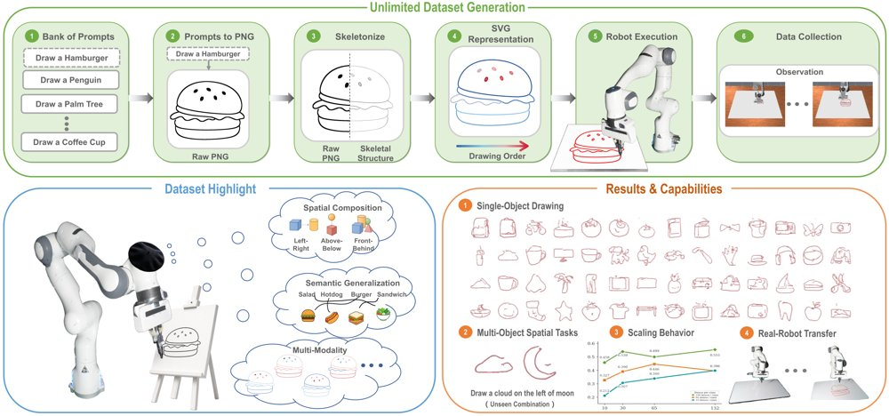
BURGER 总览：提示生成的 PNG 图像被转换为骨架、SVG 笔画和机器人轨迹，用于评测 VLA 的语义定位、空间推理、多模态动作生成、单物体与组合绘画、数据缩放及真机部署。
解决了什么问题。VLA模型能否随训练数据规模和任务多样性增长，学会多样的语言条件行为，仍缺少可控、可诊断的评测。真实机器人数据采集成本高，而仅看任务成功率难以区分语言定位、空间推理和动作生成中的不同失败模式。
方法。作者构建 BURGER：用 GPT-Image 2 从语言提示生成草图，再经骨架化、SVG 笔画排序转换为仿真和真机可执行的机器人轨迹，主实验在 ManiSkill/SAPIEN 中回放，并也在 MuJoCo 与 Isaac Sim 中实现。数据包含132个单物体任务和150个组合任务，每任务100条演示，共28,200条仿真轨迹；另采集10个单物体类、每类10条真实机器人演示。
关键结果。在282个任务、28,200条仿真演示上，BURGER 每条指令平均有7.13个有效轨迹模态，LIBERO 为1.09个，约6.6倍；π0 在8个代表任务上的 rollout 保留2.1–6.7个模态，训练演示为4.0–7.7个。流匹配模型随训练类数和每类演示数增加总体提升，π0-FAST 波动更大；受控画圆中 OpenVLA-OFT 的 chunk=1 接触成功6/20，chunk=8 为20/20，但 sweep 为586.1°，π0.5 为355.2°。作者还用 DINOv3 指标做用户研究，Spearman 相关0.834，高于 CLIPScore 的0.592。
为什么值得看。绘画从同一空白画布开始，消除了从初始观察推断目标的视觉捷径；同一指令允许多种笔画顺序和轨迹，使语言定位、空间组合和动作生成的失败可直接从画布与轨迹中检查，为在昂贵真机数据采集前诊断VLA架构提供可控测试台。
局限 / 存疑。论文指出，BURGER 简化了绘画中接触丰富的物理过程和笔刷动力学，自动生成流程与笔画顺序启发式也可能让数据风格偏离人类演示。真实机器人实验仅覆盖10个单物体类、每类10条演示，外推到更广泛任务仍需谨慎。
alphaXiv · arXiv
合成预预训练，算力花在自然语言上更划算
在算力对齐的多组实验中，把预算分给合成预预训练从未胜过直接训练自然语言；先前NCA报告的增益对权重初始化方案高度敏感。
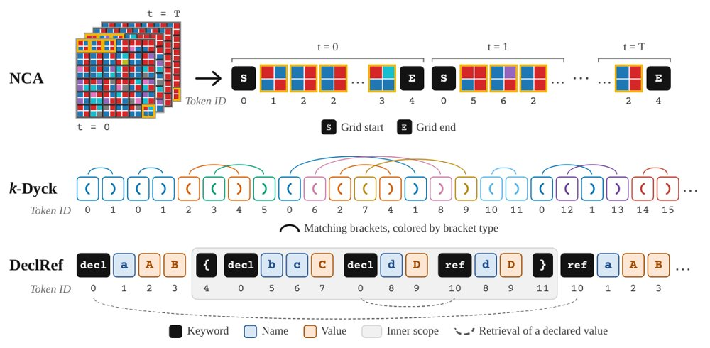
三类合成预预训练数据的 token 化方式示例：NCA 的每帧网格被切成 2×2 补丁、每块一个 token 并按时间顺序拼接，k-Dyck 的开闭括号各为独立 token，DeclRef 的关键字、作用域括号、名字与值各有专属 token。
解决了什么问题。预预训练（PPT）先在一段合成数据上训练、再转入常规自然语言预训练，被寄望于注入层次结构、长程依赖、上下文检索等计算先验，并在自然语言数据稀缺时提供近乎无限的训练信号。此前工作报告了最高8.6%的困惑度改善，但这些增益在其他训练配置与算力分配方式下是否稳健，尚不清楚。
方法。作者在加性算力（PPT 额外叠加在固定自然语言预算之上）与算力对齐（PPT 从总 FLOP 预算中分走一部分）两类设定下，系统比较 k-Dyck、神经细胞自动机（NCA）、自建的声明式引用语料 DeclRef 以及代码数据。算力对齐实验覆盖三种情形：数据受限（固定 100M 自然语言 token、1×10^18 FLOPs）、数据不受限（在 1×10^18、3×10^18、9×10^18 FLOPs 下逐方法搜索最优模型规模）以及高 token/参数比的 over-Chinchilla 设定（881M 参数、50B token）。所有模型基于 NanoChat 分支训练，并额外消融了三种权重初始化方案。
关键结果。在数据受限设定中，任何比例的 PPT 都使验证 BPB 上升，超过 5% 后趋于平缓；在 881M 参数、50B token 的 over-Chinchilla 设定中，NCA 与 k-Dyck（各用 0.5B PPT token）在验证损失和 DCLM CORE 上均未超过基线。加性设定下，336M 模型在 50M 和 100M 自然语言 token 时两种合成课程确有改善，但到 1B token 时，在谱初始化基线下降至种子波动范围内。复现 NCA 实验（400M Llama、约 9B OpenWebText token）时，在原初始化下复现出 5.4% 困惑度改善；仅把 token embedding 初始化从 N(0,1) 改为 N(0,0.02)，基线自身就改善 9.0%，两者差距随之消失。保留实验中，PPT 阶段学到的能力在阶段边界后立即遗忘，改为每批 5% 均匀交错可避免遗忘，但自然语言验证损失无显著改善。
为什么值得看。这说明把合成数据前置为一个独立训练阶段可能并不是好的用法：收益在自然语言预算变大后消失，且跨阶段会被逐步覆盖。作者建议未来工作改查交错式数据调度，并在评估中同时变动初始化方案。
局限 / 存疑。作者未能对 9×10^18 FLOPs 以上预算做完整超参搜索，最大模型不到 1B 参数，PPT 算力占比固定为 1% 和 5% 而未调优；此外结果以 BPB 报告，与先前工作常用的困惑度数值不可直接比较，且所用 NanoChat 的分词器、架构与语料均与前人不同。
alphaXiv · arXiv
期刊
Nature · Briefing Chat: <b>Dog years: could longevity science extend your pets' lives?</b>
Nature 于2026年10月30日上线的简报讨论宠物长寿科学这一新兴领域，并提到一位研究者决定不再在意学生评价。摘要未给出具体研究结果或量化数据，可作为跨领域动态了解。
Nature · Author Correction: Rh<sup>3+</sup> stabilized in KRh@MFI catalyses regioselective hydroformylation
Nature在线发布了一则作者更正，针对“KRh@MFI中稳定的Rh3+催化区域选择性氢甲酰化”一文，更正于2026年10月30日上线。该更正提醒读者在引用或复现相关催化结果时核对原文与更正内容；若用该体系数据做建模或文献挖掘，应同步更新记录。